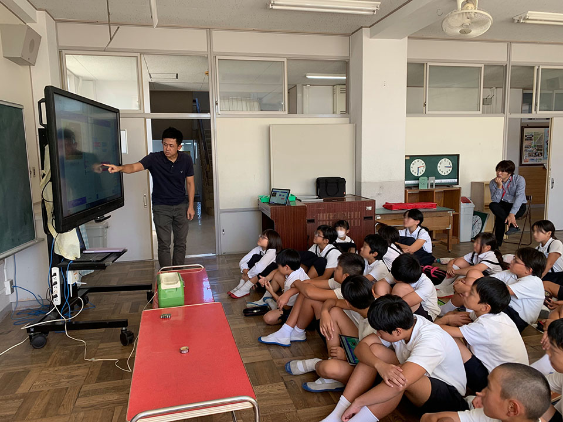
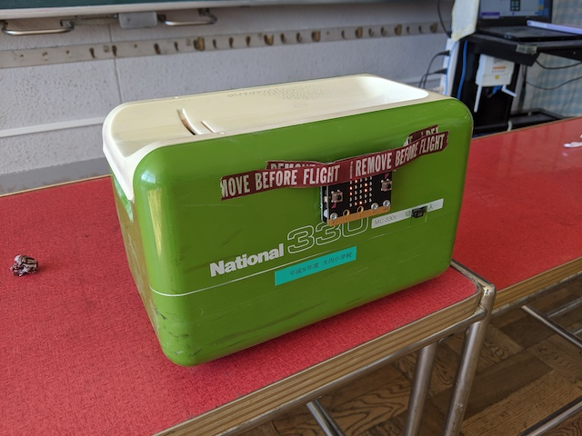
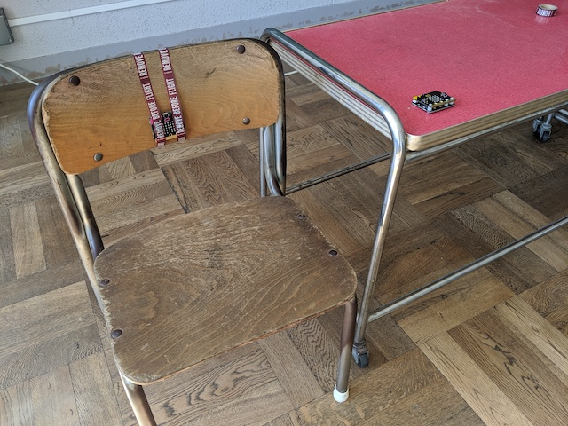
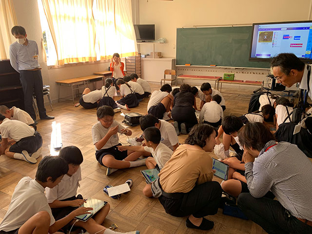
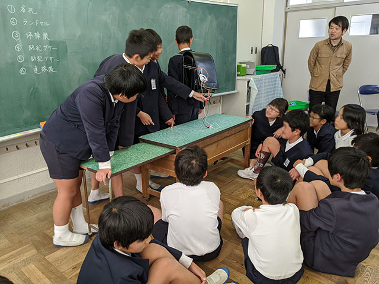

山口市教育委員会の実証事業として、9月から11月にかけて行われた大内小学校のプログラミング教育実証事業に代表の原田が講師として参加しました。 パソコンクラブに所属する4年生から6年生を対象に、教育用の小型コンピューターボードであるmicro:bitと校内の身の回りの物を組み合わせたプログラミングを体験してもらう試みです。
自分たちが何をするのか生徒に具体的にわかってもらうため事前にサンプルを制作しました。 生徒に見せたものは2つで、1つ目は黒板消しクリーナーの清掃完了確認です。 清掃時のクリーナーの振動が10カウント続くと完了のマークを表示させます。10カウント途中で止めると0にリセットされます。
もう1つは2台のmicro:bitと無線機能を用いた着席検知ランプです。座席の背もたれに取り付けた1台が明るさを検知して無線送信します。生徒が着席すると遮蔽され明るさの値が0になり、もう1つのmicro:bitがそれを着席と捉えてLEDを点灯させます。先生が生徒を見ずして着席を検知できるアイデアです。
micro:bitの使い方と上記サンプルの解説を受けた後、生徒は6人前後のチームに振り分けられました。 全生徒が持ち寄った校内の道具や備品からチーム毎に1つを選択してアイデア出しを行い、 アイデアが決まった後はタブレット端末でプログラミングしたコードをmicro:bitに転送しながら動作確認を行いました。
明るさ・傾き・振動など、各チームが異なるセンサーを用いて試行錯誤しながらアイデアを形にしていきました。 最後のコマは発表会を行いました。 ランドセルに取り付け音を鳴らすまでうまくいったチーム、動作がうまくいかず口頭だけの発表になってしまい悔しかったチーム。 全5回の短い時間でしたが、プログラミングの楽しさと難しさを体験できたのではないでしょうか。
生徒の1人からは「このプログラミング学習で、身の回りのものがプログラミングされて動いてることが分かった」という意見がありました。 スオウは引き続き、子供たちにITの仕組みや可能性を学ぶ機会を積極的に支援して参ります。